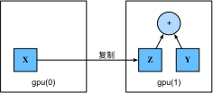

GPU
:label:sec_use_gpu
在 :numref:tab_intro_decade中，
我们回顾了过去20年计算能力的快速增长。
简而言之，自2000年以来，GPU性能每十年增长1000倍。
本节，我们将讨论如何利用这种计算性能进行研究。 首先是如何使用单个GPU，然后是如何使用多个GPU和多个服务器（具有多个GPU）。
我们先看看如何使用单个NVIDIA GPU进行计算。
首先，确保至少安装了一个NVIDIA GPU。
然后，下载NVIDIA驱动和CUDA
并按照提示设置适当的路径。
当这些准备工作完成，就可以使用nvidia-smi命令来(查看显卡信息。)
#@tab all
!nvidia-smi
:begin_tab:mxnet
读者可能已经注意到MXNet张量看起来与NumPy的ndarray几乎相同。
但有一些关键区别，其中之一是MXNet支持不同的硬件设备。
在MXNet中，每个数组都有一个环境（context）。 默认情况下，所有变量和相关的计算都分配给CPU。 有时环境可能是GPU。 当我们跨多个服务器部署作业时，事情会变得更加棘手。 通过智能地将数组分配给环境， 我们可以最大限度地减少在设备之间传输数据的时间。 例如，当在带有GPU的服务器上训练神经网络时， 我们通常希望模型的参数在GPU上。
接下来，我们需要确认是否安装了MXNet的GPU版本。
如果已经安装了MXNet的CPU版本，我们需要先卸载它。
例如，使用pip uninstall mxnet命令，
然后根据CUDA版本安装相应的MXNet的GPU版本。
例如，假设已经安装了CUDA10.0，可以通过pip install mxnet-cu100安装支持CUDA10.0的MXNet版本。
:end_tab:
:begin_tab:pytorch
在PyTorch中，每个数组都有一个设备（device），
我们通常将其称为环境（context）。
默认情况下，所有变量和相关的计算都分配给CPU。
有时环境可能是GPU。
当我们跨多个服务器部署作业时，事情会变得更加棘手。
通过智能地将数组分配给环境，
我们可以最大限度地减少在设备之间传输数据的时间。
例如，当在带有GPU的服务器上训练神经网络时，
我们通常希望模型的参数在GPU上。
:end_tab:
:begin_tab:paddle
在PaddlePaddle中，每个张量都有一个设备（device），
我们通常将其称为上下文（context）。
默认情况下，所有变量和相关的计算都分配给CPU。
有时上下文可能是GPU。
当我们跨多个服务器部署作业时，事情会变得更加棘手。
通过智能地将数组分配给上下文，
我们可以最大限度地减少在设备之间传输数据的时间。
例如，当在带有GPU的服务器上训练神经网络时，
我们通常希望模型的参数在GPU上。
接下来，我们需要确认安装了PaddlePaddle的GPU版本。
如果已经安装了PaddlePaddle的CPU版本，我们需要先卸载它。
然后根据你的CUDA版本安装相应的PaddlePaddle的GPU版本。
例如，假设你安装了CUDA10.1，你可以通过conda install paddlepaddle-gpu==2.2.2 cudatoolkit=10.1 --channel https://mirrors.tuna.tsinghua.edu.cn/anaconda/cloud/Paddle/安装支持CUDA10.1的PaddlePaddle版本。
:end_tab:
要运行此部分中的程序，至少需要两个GPU。 注意，对大多数桌面计算机来说，这可能是奢侈的，但在云中很容易获得。 例如可以使用AWS EC2的多GPU实例。 本书的其他章节大都不需要多个GPU， 而本节只是为了展示数据如何在不同的设备之间传递。
[计算设备]
我们可以指定用于存储和计算的设备，如CPU和GPU。 默认情况下，张量是在内存中创建的，然后使用CPU计算它。
:begin_tab:mxnet
在MXNet中，CPU和GPU可以用cpu()和gpu()表示。
需要注意的是，cpu()（或括号中的任意整数）表示所有物理CPU和内存，
这意味着MXNet的计算将尝试使用所有CPU核心。
然而，gpu()只代表一个卡和相应的显存。
如果有多个GPU，我们使用gpu(i)表示第$i$块GPU（$i$从0开始）。
另外，gpu(0)和gpu()是等价的。
:end_tab:
:begin_tab:pytorch
在PyTorch中，CPU和GPU可以用torch.device('cpu')
和torch.device('cuda')表示。
应该注意的是，cpu设备意味着所有物理CPU和内存，
这意味着PyTorch的计算将尝试使用所有CPU核心。
然而，gpu设备只代表一个卡和相应的显存。
如果有多个GPU，我们使用torch.device(f'cuda:{i}')
来表示第$i$块GPU（$i$从0开始）。
另外，cuda:0和cuda是等价的。
:end_tab:
:begin_tab:paddle
在飞桨中，CPU和GPU可以用paddle.device.set_device('cpu')
和paddle.device.set_device('gpu')表示。
应该注意的是，cpu设备意味着所有物理CPU和内存,
这意味着飞桨的计算将尝试使用所有CPU核心。
然而，gpu设备只代表一个卡和相应的显存。
如果有多个GPU，我们使用paddle.device.get_device()
其中输出的数字是表示的是卡号（比如gpu:3，表示的是卡3，注意GPU的卡号是从0开始的）。
另外，gpu:0和gpu是等价的。
:end_tab:
from mxnet import np, npx
from mxnet.gluon import nn
npx.set_np()
npx.cpu(), npx.gpu(), npx.gpu(1)
#@tab pytorch
import torch
from torch import nn
torch.device('cpu'), torch.device('cuda'), torch.device('cuda:1')
#@tab tensorflow
import tensorflow as tf
tf.device('/CPU:0'), tf.device('/GPU:0'), tf.device('/GPU:1')
#@tab paddle
import paddle
from paddle import nn
paddle.device.set_device("cpu"), paddle.CUDAPlace(0), paddle.CUDAPlace(1)
我们可以(查询可用gpu的数量。)
npx.num_gpus()
#@tab pytorch
torch.cuda.device_count()
#@tab tensorflow
len(tf.config.experimental.list_physical_devices('GPU'))
#@tab paddle
paddle.device.cuda.device_count()
现在我们定义了两个方便的函数， [这两个函数允许我们在不存在所需所有GPU的情况下运行代码。]
def try_gpu(i=0): #@save
"""如果存在，则返回gpu(i)，否则返回cpu()"""
return npx.gpu(i) if npx.num_gpus() >= i + 1 else npx.cpu()
def try_all_gpus(): #@save
"""返回所有可用的GPU，如果没有GPU，则返回[cpu()]"""
devices = [npx.gpu(i) for i in range(npx.num_gpus())]
return devices if devices else [npx.cpu()]
try_gpu(), try_gpu(10), try_all_gpus()
#@tab pytorch
def try_gpu(i=0): #@save
"""如果存在，则返回gpu(i)，否则返回cpu()"""
if torch.cuda.device_count() >= i + 1:
return torch.device(f'cuda:{i}')
return torch.device('cpu')
def try_all_gpus(): #@save
"""返回所有可用的GPU，如果没有GPU，则返回[cpu(),]"""
devices = [torch.device(f'cuda:{i}')
for i in range(torch.cuda.device_count())]
return devices if devices else [torch.device('cpu')]
try_gpu(), try_gpu(10), try_all_gpus()
#@tab tensorflow
def try_gpu(i=0): #@save
"""如果存在，则返回gpu(i)，否则返回cpu()"""
if len(tf.config.experimental.list_physical_devices('GPU')) >= i + 1:
return tf.device(f'/GPU:{i}')
return tf.device('/CPU:0')
def try_all_gpus(): #@save
"""返回所有可用的GPU，如果没有GPU，则返回[cpu(),]"""
num_gpus = len(tf.config.experimental.list_physical_devices('GPU'))
devices = [tf.device(f'/GPU:{i}') for i in range(num_gpus)]
return devices if devices else [tf.device('/CPU:0')]
try_gpu(), try_gpu(10), try_all_gpus()
#@tab paddle
#@save
def try_gpu(i=0):
"""如果存在，则返回gpu(i)，否则返回cpu()。"""
if paddle.device.cuda.device_count() >= i + 1:
return paddle.CUDAPlace(i)
return paddle.CPUPlace()
#@save
def try_all_gpus():
"""返回所有可用的GPU，如果没有GPU，则返回[cpu(),]。"""
devices = [paddle.CUDAPlace(i)
for i in range(paddle.device.cuda.device_count())]
return devices if devices else paddle.CPUPlace()
try_gpu(),try_gpu(10),try_all_gpus()
张量与GPU
我们可以[查询张量所在的设备。] 默认情况下，张量是在CPU上创建的。
x = np.array([1, 2, 3])
x.ctx
#@tab pytorch
x = torch.tensor([1, 2, 3])
x.device
#@tab tensorflow
x = tf.constant([1, 2, 3])
x.device
#@tab paddle
x = paddle.to_tensor([1, 2, 3])
x.place
需要注意的是，无论何时我们要对多个项进行操作， 它们都必须在同一个设备上。 例如，如果我们对两个张量求和， 我们需要确保两个张量都位于同一个设备上， 否则框架将不知道在哪里存储结果，甚至不知道在哪里执行计算。
[存储在GPU上]
有几种方法可以在GPU上存储张量。
例如，我们可以在创建张量时指定存储设备。接
下来，我们在第一个gpu上创建张量变量X。
在GPU上创建的张量只消耗这个GPU的显存。
我们可以使用nvidia-smi命令查看显存使用情况。
一般来说，我们需要确保不创建超过GPU显存限制的数据。
X = np.ones((2, 3), ctx=try_gpu())
X
#@tab pytorch
X = torch.ones(2, 3, device=try_gpu())
X
#@tab tensorflow
with try_gpu():
X = tf.ones((2, 3))
X
#@tab paddle
X = paddle.to_tensor(paddle.ones(shape=[2, 3]), place=try_gpu())
X
假设我们至少有两个GPU，下面的代码将在(第二个GPU上创建一个随机张量。)
Y = np.random.uniform(size=(2, 3), ctx=try_gpu(1))
Y
#@tab pytorch
Y = torch.rand(2, 3, device=try_gpu(1))
Y
#@tab tensorflow
with try_gpu(1):
Y = tf.random.uniform((2, 3))
Y
#@tab paddle
Y = paddle.to_tensor(paddle.rand([2, 3]), place=try_gpu(1))
Y
复制
如果我们[要计算X + Y，我们需要决定在哪里执行这个操作]。
例如，如 :numref:fig_copyto所示，
我们可以将X传输到第二个GPU并在那里执行操作。
不要简单地X加上Y，因为这会导致异常，
运行时引擎不知道该怎么做：它在同一设备上找不到数据会导致失败。
由于Y位于第二个GPU上，所以我们需要将X移到那里，
然后才能执行相加运算。

:label:fig_copyto
Z = X.copyto(try_gpu(1))
print(X)
print(Z)
#@tab pytorch, paddle
Z = X.cuda(1)
print(X)
print(Z)
#@tab tensorflow
with try_gpu(1):
Z = X
print(X)
print(Z)
[现在数据在同一个GPU上（Z和Y都在），我们可以将它们相加。]
#@tab all
Y + Z
:begin_tab:mxnet
假设变量Z已经存在于第二个GPU上。
如果现在我们还是调用Z.copyto(gpu(1))会发生什么？
即使该变量已经存在于目标设备（第二个GPU）上，
它仍将被复制并保存在新分配的显存中。
有时，我们只想在变量存在于不同设备中时进行复制。
在这种情况下，我们可以调用as_in_ctx。
如果变量已经存在于指定的设备中，则这不会进行任何操作。
除非我们特别想创建一个复制，否则选择as_in_ctx方法。
:end_tab:
:begin_tab:pytorch
假设变量Z已经存在于第二个GPU上。
如果我们还是调用Z.cuda(1)会发生什么？
它将返回Z，而不会复制并分配新内存。
:end_tab:
:begin_tab:tensorflow
假设变量Z已经存在于第二个GPU上。
如果我们仍然在同一个设备作用域下调用Z2 = Z会发生什么？
它将返回Z，而不会复制并分配新内存。
:end_tab:
Z.as_in_ctx(try_gpu(1)) is Z
#@tab pytorch, paddle
Z.cuda(1) is Z
#@tab tensorflow
with try_gpu(1):
Z2 = Z
Z2 is Z
旁注
人们使用GPU来进行机器学习，因为单个GPU相对运行速度快。 但是在设备（CPU、GPU和其他机器）之间传输数据比计算慢得多。 这也使得并行化变得更加困难，因为我们必须等待数据被发送（或者接收）， 然后才能继续进行更多的操作。 这就是为什么拷贝操作要格外小心。 根据经验，多个小操作比一个大操作糟糕得多。 此外，一次执行几个操作比代码中散布的许多单个操作要好得多。 如果一个设备必须等待另一个设备才能执行其他操作， 那么这样的操作可能会阻塞。 这有点像排队订购咖啡，而不像通过电话预先订购： 当客人到店的时候，咖啡已经准备好了。
最后，当我们打印张量或将张量转换为NumPy格式时， 如果数据不在内存中，框架会首先将其复制到内存中， 这会导致额外的传输开销。 更糟糕的是，它现在受制于全局解释器锁，使得一切都得等待Python完成。
[神经网络与GPU]
类似地，神经网络模型可以指定设备。 下面的代码将模型参数放在GPU上。
net = nn.Sequential()
net.add(nn.Dense(1))
net.initialize(ctx=try_gpu())
#@tab pytorch
net = nn.Sequential(nn.Linear(3, 1))
net = net.to(device=try_gpu())
#@tab tensorflow
strategy = tf.distribute.MirroredStrategy()
with strategy.scope():
net = tf.keras.models.Sequential([
tf.keras.layers.Dense(1)])
#@tab paddle
net = nn.Sequential(nn.Linear(3, 1))
net=net.to(try_gpu())
在接下来的几章中， 我们将看到更多关于如何在GPU上运行模型的例子， 因为它们将变得更加计算密集。
当输入为GPU上的张量时，模型将在同一GPU上计算结果。
#@tab all
net(X)
让我们(确认模型参数存储在同一个GPU上。)
net[0].weight.data().ctx
#@tab pytorch
net[0].weight.data.device
#@tab tensorflow
net.layers[0].weights[0].device, net.layers[0].weights[1].device
#@tab paddle
net[0].weight.place
总之，只要所有的数据和参数都在同一个设备上， 我们就可以有效地学习模型。 在下面的章节中，我们将看到几个这样的例子。
小结
- 我们可以指定用于存储和计算的设备，例如CPU或GPU。默认情况下，数据在主内存中创建，然后使用CPU进行计算。
- 深度学习框架要求计算的所有输入数据都在同一设备上，无论是CPU还是GPU。
- 不经意地移动数据可能会显著降低性能。一个典型的错误如下：计算GPU上每个小批量的损失，并在命令行中将其报告给用户（或将其记录在NumPy
ndarray中）时，将触发全局解释器锁，从而使所有GPU阻塞。最好是为GPU内部的日志分配内存，并且只移动较大的日志。
练习
- 尝试一个计算量更大的任务，比如大矩阵的乘法，看看CPU和GPU之间的速度差异。再试一个计算量很小的任务呢？
- 我们应该如何在GPU上读写模型参数？
- 测量计算1000个$100 \times 100$矩阵的矩阵乘法所需的时间，并记录输出矩阵的Frobenius范数，一次记录一个结果，而不是在GPU上保存日志并仅传输最终结果。
- 测量同时在两个GPU上执行两个矩阵乘法与在一个GPU上按顺序执行两个矩阵乘法所需的时间。提示：应该看到近乎线性的缩放。
:begin_tab:mxnet
Discussions
:end_tab:
:begin_tab:pytorch
Discussions
:end_tab:
:begin_tab:tensorflow
Discussions
:end_tab:
:begin_tab:paddle
Discussions
:end_tab: